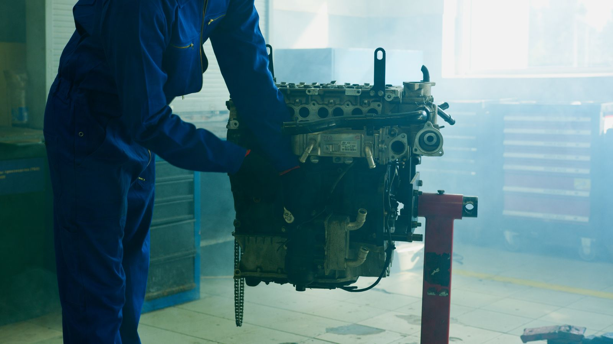

A Maynard Auto Center faz mecânica completa para carros nacionais e importados na Av. Antônio Carlos Magalhães, nº 3410, no Iguatemi, em Salvador. Aqui você resolve motor, câmbio, suspensão, freios, injeção eletrônica, embreagem e arrefecimento no mesmo lugar. Todo serviço passa por diagnóstico e orçamento antes de qualquer peça ser mexida.
O que cobre a mecânica completa
Problema no motor puxa a maior parte dos carros até a oficina. Ruído estranho, perda de potência, consumo alto de óleo, falha na partida: a equipe da Maynard identifica a causa e resolve na raiz, sem ficar trocando peça por tentativa. Câmbio manual ou automático recebe o mesmo cuidado, com troca de óleo específico e ajuste de trepidação ao mudar de marcha. Suspensão gasta amortecedor, mola, bucha e terminal rápido nas ruas de Salvador, e isso também entra na revisão.
Freio não dá segunda chance. Pastilha, disco, fluido e sistema ABS passam por revisão completa, porque frear mal numa ladeira de Salvador é motivo de susto. A injeção eletrônica cuida da parte que ninguém vê: sensor, bico injetor, sonda lambda e leitura de falha pelo scanner, ajustando o carro para rodar redondo e gastar menos combustível. Embreagem com trepidação, cheiro de queimado ou ponto de pega alto também é serviço rotineiro por aqui.
Direção pesada, barulho na frente do carro ou volante puxando para um lado costuma ser terminal ou caixa de direção desgastada, e isso entra na mecânica completa. O sistema de arrefecimento fecha a lista: radiador, mangueira, bomba d'água e válvula termostática são checados para o motor não esquentar e travar no trânsito da ACM.
Correia dentada e correia auxiliar também entram na revisão, mesmo quando o carro não dá sinal de problema. Essas peças ficam escondidas debaixo do capô e costumam ser lembradas só quando já quebraram, o que pode danificar o motor inteiro em alguns modelos. Checar o prazo de troca dessas correias evita um transtorno bem maior do que o custo da peça em si.
Atendemos nacionais e importados
Boa parte das oficinas de Salvador recusa carro importado ou manda buscar peça em outro estado, cobrando caro por um scanner específico. Na Maynard isso não acontece. A oficina tem equipamento de diagnóstico compatível com marcas importadas e mecânico com prática nesses sistemas. BMW, Audi, Mercedes ou qualquer importado é atendido com o mesmo cuidado de um Onix ou um HB20. Essa experiência evita o retrabalho comum de quem leva o carro numa oficina despreparada para esse tipo de sistema.
Isso vale tanto para uma revisão simples quanto para um motor ou câmbio mais complexo de resolver. Tudo acontece na Av. Antônio Carlos Magalhães, nº 3410, no Iguatemi, endereço de acesso fácil para quem vem de qualquer ponto de Salvador.
Como funciona o orçamento
Antes de tocar em qualquer peça, o carro passa por diagnóstico. É nessa etapa que a equipe identifica o que realmente está errado, sem chute e sem trocar peça que não precisava ser trocada.
Depois do diagnóstico vem o orçamento, com valor de peça e mão de obra explicado direito. O serviço só começa depois que você aprova. Nenhuma etapa roda sem sua autorização, e qualquer ajuste no meio do caminho também passa por você antes de virar cobrança.
Se durante o serviço aparecer outro problema que não estava previsto, a equipe para e avisa antes de continuar. Isso evita a surpresa de pegar o carro de volta com um valor bem diferente do combinado no início.
Bairros que atendemos
A Maynard fica no Iguatemi e atende clientes de toda a região próxima à Av. ACM: Itaigara, Pituba, Caminho das Árvores, Horto Florestal, Stiep, Boca do Rio, Imbuí e Tancredo Neves. Quem mora ou trabalha por essas bandas chega rápido até a oficina.
Essa proximidade facilita a manutenção regular do carro. Em vez de deixar a revisão pra depois porque a oficina fica longe, quem mora nesses bairros consegue encaixar o serviço no meio da rotina, sem perder o dia inteiro só com o deslocamento.
Perguntas frequentes sobre mecânica geral
Quais serviços de mecânica a Maynard oferece?
A oficina cobre mecânica geral completa: motor, câmbio, suspensão, freios, direção, injeção eletrônica, embreagem e sistema de arrefecimento. Atende carro nacional e importado, sem distinção.
A Maynard faz orçamento antes de começar o serviço?
Sim. Nenhum serviço começa sem você saber o valor e aprovar antes. Primeiro vem o diagnóstico, depois o orçamento é apresentado, e só então o serviço é iniciado, com sua autorização.
Precisa agendar ou posso ir sem hora marcada?
Dá para ir sem agendamento. Mas para garantir atendimento imediato e reduzir o tempo de espera, o ideal é marcar antes pelo WhatsApp.
A oficina trabalha com peças originais ou paralelas?
As duas opções estão disponíveis. Você escolhe entre peça original de fábrica ou similar de qualidade, com informação clara sobre a diferença de preço e de garantia entre uma e outra.
Qual o prazo médio de um serviço de mecânica geral?
Depende do serviço. Trocas simples saem no mesmo dia. Serviço mais complexo, como câmbio ou suspensão completa, pode levar um ou dois dias. O prazo certo vem informado junto com o orçamento.
Precisa resolver o carro sem enrolação? Chame a Maynard Auto Center no WhatsApp (71) 99626-6142 ou ligue direto para o mesmo número. A oficina fica na Av. Antônio Carlos Magalhães, nº 3410, no Iguatemi, em Salvador, e funciona de segunda a sexta das 8h às 18h e aos sábados das 8h ao meio-dia.